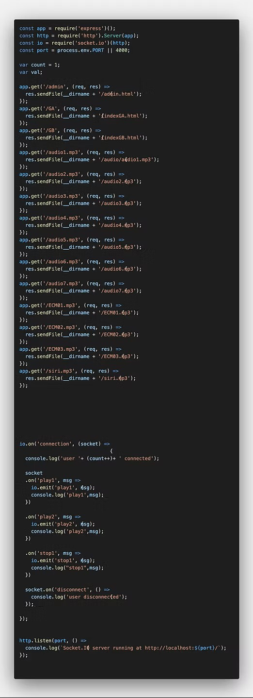
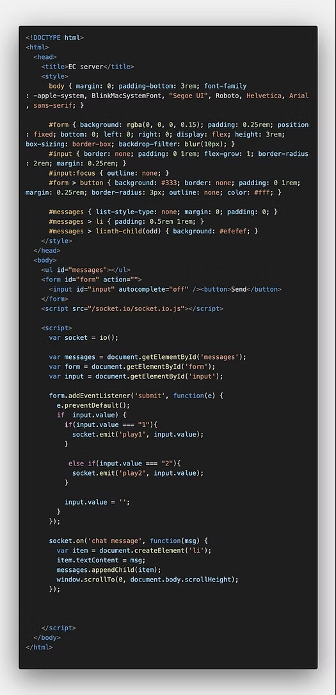
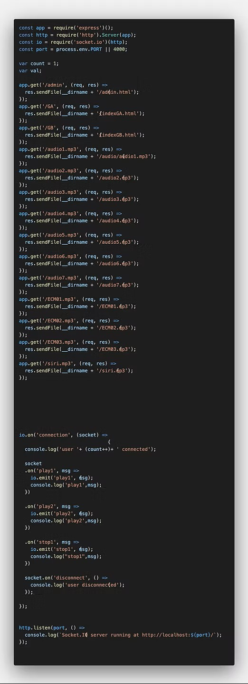
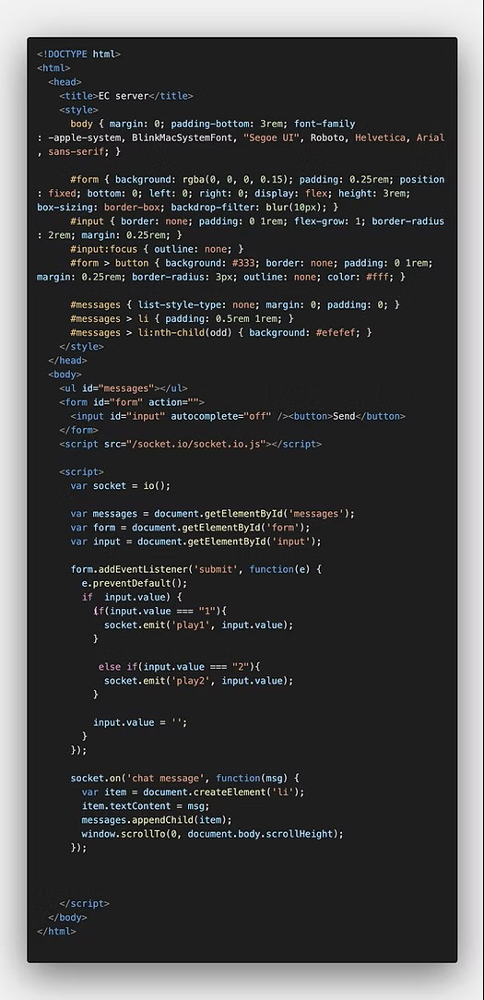

Existential Crisis
live-performance
Credit: Sound Production / Programming | YUN-HSUAN CHENG
Technologies
CONCEPT
"Existential Crisis" is an experimental live sound performance that integrates viewers into the artwork by connecting the server with their mobile devices through QR code scanning. It aims to initiate a discussion on the impact of mobile notification sounds on our daily attention. This artwork explores the relationship between technology and human existence, using mobile devices as instruments to create auditory landscapes.
The performance explores the impact of mobile notifications on our daily routines and cognitive responses through an interactive auditory landscape. "Existential Crisis" provides a conceptual platform for examining the intersection between technology and our fundamental survival instincts, initiating a profound dialogue between technology's auditory cues and the mechanisms that govern human existence. It highlights the close relationship between our auditory experiences and cognitive responses, encouraging viewers to rethink their relationship with the devices that have become essential to our daily lives.
 


